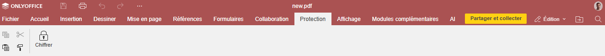
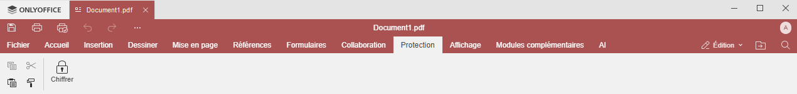

Onglet Protection
L'onglet Protection du Générateur de formulaires permet de protéger des formulaires PDF avec un mot de passe.
Fenêtre du Générateur de formulaires en ligne:

Fenêtre du Générateur de formulaires de bureau:

En utilisant cet onglet, vous pouvez:
- définir un mot de passe passe pour ouvrir votre formulaire PDF,
- modifier et supprimer des mots de passe,
- annuler toute la protection du formulaire PDF.